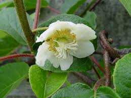

Actinidiaceae
Kiwi Family
Actinidiaceae is a family of dicotyledonous flowering plants, best known for the genus Actinidia, which includes the commercially important kiwifruit. The family primarily consists of woody vines (lianas), shrubs, and small trees native to temperate and subtropical regions of Asia, with one genus (Saurauia) also found in tropical America. They typically feature simple, alternate leaves and flowers with numerous stamens.
Overview
The Actinidiaceae family comprises three genera: Actinidia, Saurauia, and Clematoclethra, encompassing approximately 360 species. The vast majority of species belong to Saurauia (around 300 species), which are mostly shrubs and trees found in tropical and subtropical Asia and the Americas. Actinidia (about 55 species) consists mainly of temperate woody vines from East Asia, famous for yielding kiwifruit. Clematoclethra (about 10 species) includes deciduous climbing shrubs from central and western China.
Members of this family inhabit a range of environments from temperate forests to tropical montane forests. Many Actinidia species are vigorous climbers, using twining stems to ascend trees. Saurauia species are often understory trees or shrubs in cloud forests. The family is characterized by simple, alternate leaves, often serrated, and flowers that typically have numerous stamens surrounding a superior ovary composed of multiple fused carpels.
The primary economic importance of Actinidiaceae lies in the cultivation of several Actinidia species for their edible fruits, collectively known as kiwifruit or Chinese gooseberries (A. deliciosa, A. chinensis, A. arguta). Some species (A. kolomikta, Clematoclethra) are also grown as ornamental vines for their foliage or flowers. Saurauia species have limited local uses.
Quick Facts
- Scientific Name: Actinidiaceae
- Common Name: Kiwi family
- Number of Genera: 3 (Actinidia, Saurauia, Clematoclethra)
- Number of Species: Approximately 360
- Distribution: Temperate and subtropical Asia, tropical Central and South America
- Evolutionary Group: Eudicots - Asterids - Ericales
Key Characteristics
Growth Form and Habit
Actinidiaceae are predominantly woody plants. They include deciduous or evergreen lianas (vigorous vines like Actinidia), shrubs, and small to medium-sized trees (especially Saurauia). Plants often possess various types of hairs (simple, stellate, bristly), which can be useful for identification. Raphide crystals (needle-shaped calcium oxalate) are common in the tissues.
Leaves
Leaves are alternate and arranged spirally along the stem. They are simple, usually with serrated or toothed margins (rarely entire). Petioles are often long. Stipules are absent.
Inflorescence
Flowers are typically borne in axillary positions, either solitary or more commonly arranged in cymose inflorescences (cymes, thyrses, or fascicles). Bracts are usually present but small.
Flowers
Flowers are usually actinomorphic (radially symmetrical) and often showy. While structurally bisexual, they are frequently functionally unisexual, with plants being dioecious (separate male and female plants) or polygamo-dioecious (some plants having bisexual flowers, others only male or female). Flowers typically have:
- Calyx: Usually 5 sepals (sometimes 4 or up to 8), distinct or slightly fused at the base, often persistent in fruit.
- Corolla: Usually 5 petals (sometimes 4 or up to 8), distinct, typically white, but sometimes pinkish or yellowish.
- Androecium: Stamens are numerous (10 to many), arranged in several whorls. Filaments are distinct. Anthers are often versatile (attached near the middle and able to swing freely), basifixed or dorsifixed, and typically dehisce via longitudinal slits or sometimes apical pores.
- Gynoecium: A single superior ovary composed of multiple fused carpels (typically 3-5, but up to 30 or more). The ovary has as many locules as carpels, with numerous ovules arranged on axile placentae. Styles are usually distinct or fused only at the base, often persistent and radiating outwards in fruit.
Fruits and Seeds
The fruit is typically a berry, often large and fleshy as in the kiwifruit (Actinidia), containing numerous small seeds embedded in the pulp. In Saurauia, the fruit is sometimes described as a leathery berry or capsule. The persistent styles are often visible on the apex of the fruit.
Seeds are small, numerous, with an oily endosperm and a straight embryo.
Chemical Characteristics
Plants in this family commonly contain raphide crystals (calcium oxalate needles) in their cells. Many Actinidia species produce the proteolytic enzyme actinidin (similar to papain in papaya). They are often rich in ascorbic acid (Vitamin C). Saponins and iridoids have also been reported in the family.
Field Identification
Identifying Actinidiaceae often involves observing the woody habit, leaf characteristics, and floral structure, particularly the numerous stamens and multi-carpellary ovary:
Primary Identification Features
- Habit: Woody vines (lianas), shrubs, or small trees.
- Alternate, simple leaves: Leaves arranged spirally, not opposite; leaf blade undivided.
- Serrated leaf margins: Leaf edges are usually toothed or saw-like.
- Numerous stamens: Flowers typically have many stamens (more than 10).
- Superior ovary with multiple styles/locules: Ovary positioned above petals/sepals, composed of several fused carpels (visible as multiple compartments if cross-sectioned, or suggested by multiple persistent styles on fruit).
- Fruit a berry or capsule with many small seeds: Especially the characteristic kiwi-like berry in Actinidia.
Secondary Identification Features
- Absence of stipules: No small appendages at the base of the petiole.
- Presence of hairs: Often distinctive simple, stellate, or bristly hairs on leaves, stems, or buds.
- Functionally unisexual flowers (often): Plants may be dioecious, requiring observation of different individuals to find both staminate and pistillate flowers.
- Presence of raphide crystals: (Microscopic feature) Causes irritation if chewed in some species.
Seasonal Identification Tips
- Growing Season: Identify by habit (vine, shrub, tree) and alternate, simple, serrated leaves. Look for characteristic hairs.
- Flowering Season: Typically spring to summer. Look for flowers with 5 petals, numerous stamens, and multiple styles. Note if flowers appear unisexual.
- Fruiting Season: Late summer to fall. Berries (like kiwi) or capsules containing many small seeds are diagnostic. Persistent sepals and styles on the fruit are common.
Common Confusion Points
- Ericaceae (Heath family): Also in Ericales. Many are shrubs/trees with alternate simple leaves. Flowers often urn-shaped or bell-shaped, usually with 10 stamens (not numerous), and anthers often have pores or awns. Fruit can be a berry (Vaccinium) or capsule.
- Theaceae (Tea family): Also in Ericales. Trees/shrubs with alternate simple serrated leaves. Flowers often showy with numerous stamens, but stamens are often fused into a ring or bundles at the base. Fruit is typically a woody capsule.
- Rosaceae (Rose family): Very diverse. Some genera are vines/shrubs with alternate simple serrated leaves (e.g., Spiraea, some Rubus). Flowers usually have numerous stamens but also possess a hypanthium (floral cup), and stipules are usually present. Fruits are highly variable (pomes, drupes, follicles, achenes, aggregates).
- Dilleniaceae: Similar features like alternate simple serrated leaves and numerous stamens. Dilleniaceae often have distinct parallel tertiary veins in leaves and fruits that are follicles or berries often partially enclosed by fleshy sepals.
Field Guide Quick Reference
Look For:
- Woody vines, shrubs, trees
- Alternate, simple, serrated leaves
- No stipules
- Flowers with numerous stamens
- Superior ovary, multiple carpels/styles
- Fruit a berry or capsule
- Numerous small seeds
Key Variations:
- Habit: Vine (Actinidia, Clematoclethra) vs. Shrub/Tree (Saurauia)
- Flower sexuality: Bisexual but often functionally unisexual (dioecious)
- Fruit type: Berry (Actinidia) vs. Capsule/leathery berry (Saurauia)
- Hair types: Simple, stellate, bristly
Notable Examples
The family is best known for kiwifruit, but also includes a large genus of tropical shrubs and trees:

Actinidia deliciosa
Kiwifruit / Fuzzy Kiwi
A vigorous, deciduous woody vine native to southern China. It is widely cultivated globally for its fuzzy, brown-skinned fruit with green flesh and numerous small black seeds. Plants are typically dioecious, requiring both male and female vines for fruit production.

Actinidia chinensis
Golden Kiwifruit
Closely related to A. deliciosa, native to central and eastern China. This species is the primary source of smooth-skinned, golden-fleshed kiwifruit cultivars. Like fuzzy kiwi, it's a dioecious vine cultivated commercially.

Actinidia arguta
Hardy Kiwi / Tara Vine
A deciduous vine native to Japan, Korea, northern China, and the Russian Far East. It is much more cold-hardy than commercial kiwifruit. Produces smaller, grape-sized, smooth-skinned, green fruits that are often eaten whole. Plants are dioecious.

Actinidia kolomikta
Variegated Kiwi Vine / Arctic Beauty Kiwi
Native to temperate mixed forests in East Asia. This dioecious vine is grown primarily as an ornamental for its attractive heart-shaped leaves, particularly on male plants, which develop striking pink and white variegation at the tips during spring. It also produces small, edible fruits similar to hardy kiwi.

Saurauia sp.
(Genus Saurauia)
Representing the largest genus in the family (~300 species). Saurauia consists mostly of evergreen shrubs and small to medium-sized trees found in tropical and subtropical montane forests of Asia and the Americas. They typically have large, alternate, serrated leaves often covered in bristly or stellate hairs, and flowers with numerous stamens. Fruits are leathery berries or capsules.

Clematoclethra scandens
(Genus Clematoclethra)
Represents the third, smaller genus. Clematoclethra species are deciduous climbing shrubs native to China. They have alternate, simple, serrated leaves and axillary flowers, similar in structure to Actinidia but generally less vigorous. Sometimes grown ornamentally.
Phylogeny and Classification
Actinidiaceae belongs to the large and diverse order Ericales, situated within the asterid clade of eudicots. This order includes families with vastly different appearances, such as Ericaceae (blueberries, rhododendrons), Primulaceae (primroses), Sapotaceae (sapodilla), Ebenaceae (ebony, persimmon), and Theaceae (tea, camellia).
Molecular phylogenetic studies place Actinidiaceae within a well-supported clade in the Ericales that also includes Roridulaceae (a small family of carnivorous subshrubs from South Africa) and Sarraceniaceae (North American pitcher plants). This grouping highlights the sometimes surprising relationships revealed by molecular data, linking the familiar kiwi family with carnivorous plant lineages. Actinidiaceae itself is strongly supported as monophyletic, with Saurauia likely being sister to the clade containing Actinidia and Clematoclethra.
Position in Plant Phylogeny
- Kingdom: Plantae
- Clade: Angiosperms (Flowering plants)
- Clade: Eudicots
- Clade: Asterids
- Order: Ericales
- Family: Actinidiaceae
Evolutionary Significance
Actinidiaceae contributes to our understanding of diversity within the Ericales:
- Diversity in Habit: Shows diversification into lianas, shrubs, and trees within a relatively small family.
- Biogeography: Exhibits an interesting disjunct distribution pattern, primarily Asian but with the large genus Saurauia also present in the Neotropics, suggesting a complex evolutionary history.
- Reproductive Biology: The prevalence of functional dioecy highlights evolutionary trends towards outcrossing in woody plants.
- Relationship to Carnivorous Plants: Its close phylogenetic relationship with Sarraceniaceae and Roridulaceae is intriguing and helps anchor the position of these specialized carnivorous families within the broader context of the Ericales.